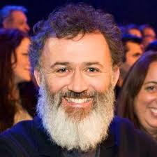
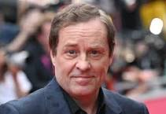
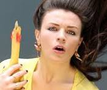
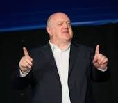
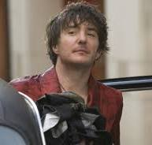

| Comedian | Background | Gallery | Video |
|---|---|---|---|
|  Tommy Tiernan |
Tommy Tiernan (born 16 June 1969) is an Irish comedian, actor, and writer. He is best known for his stand-up career, hosting The Tommy Tiernan Show (2017–present) and playing Gerry in the sitcom Derry Girls (2018–2022).
More . . . |
Gallery | YouTube |
|  Ardal O'Hanlon |
Ardal O'Hanlon (born 8 October 1965) is an Irish comedian, actor, and author. He played Father Dougal McGuire in Father Ted (1995–1998), George Sunday/Thermoman in My Hero (2000–2006), and DI Jack Mooney in Death in Paradise (2017–2020). His novel The Talk of the Town was published in 1998.
More . . . |
Gallery | YouTube |
|  Aisling Bea |
Aisling Clíodhnadh O'Sullivan (born 16 March 1984), known professionally as Aisling Bea, is an Irish comedian, actress and screenwriter. She created, wrote and starred in the comedy series This Way Up on Channel 4. As a stand-up comedian, she won the So You Think You're Funny award at the Edinburgh Festival Fringe in 2012, being only the second woman to win the award in its then-25-year history. She also appears regularly on light entertainment comedy panel shows such as QI and 8 Out of 10 Cats.
More . . . |
Gallery | YouTube |
|  Dara O'Briain |
Dara Ó Briain (born 4 February 1972) is an Irish comedian and television presenter based in the United Kingdom. He is noted for performing stand-up comedy shows all over the world and for hosting topical panel shows such as Mock the Week, The Panel, and The Apprentice: You're Fired!. In 2009, the Irish Independent described Ó Briain as "Terry Wogan's heir apparent as Britain's 'favourite Irishman'".[6]
In 2012, he was nominated for a BAFTA TV Award for Best Entertainment Performance for his work on Mock the Week. He has also been a newspaper columnist and written books for both adults and children. His first children's book, Beyond the Sky, was nominated for a Blue Peter Book Award in 2017.
More . . . |
Gallery | YouTube |
| Joanne McNally |
Joanne McNally (born 7 May 1983) is an Irish stand-up comedian, writer, and actress. McNally was the co-host of Republic of Telly for RTÉ and has also appeared on The Late Late Show, The Afternoon Show, Ireland AM, Two Tube, and The Commute for RTÉ. As well as segments on RTÉ 2fm, McNally co-hosts a podcast called My Therapist Ghosted Me with Vogue Williams.
More . . . |
Gallery | YouTube |
|  Dylan Moran |
Dylan William Moran (born 1971 or 1972) is an Irish comedian, writer, actor and artist. He is best known for his observational comedy, the comedy series Black Books (which he co-wrote and starred in), and his work with Simon Pegg in films such as Shaun of the Dead and Run Fatboy Run. He was also one of two lead characters in the Irish black comedy film A Film with Me in It.
He is a regular performer at national and international comedy festivals such as the Edinburgh Festival Fringe, Just for Laughs Montreal Comedy Festival, the Melbourne International Comedy Festival, and the Kilkenny Comedy Festival. In 2007, he was voted the 17th greatest stand-up comedian by Channel 4; in the updated 2010 list, he was ranked as the 14th greatest.
More . . . |
Gallery | YouTube |